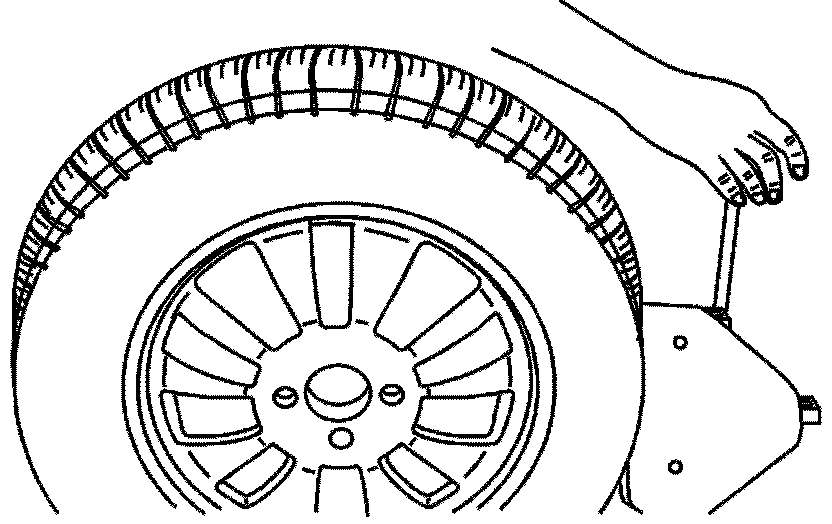
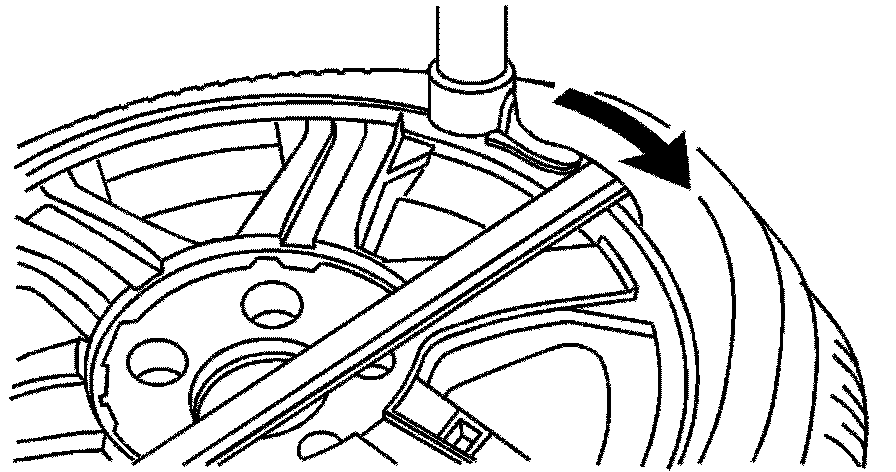
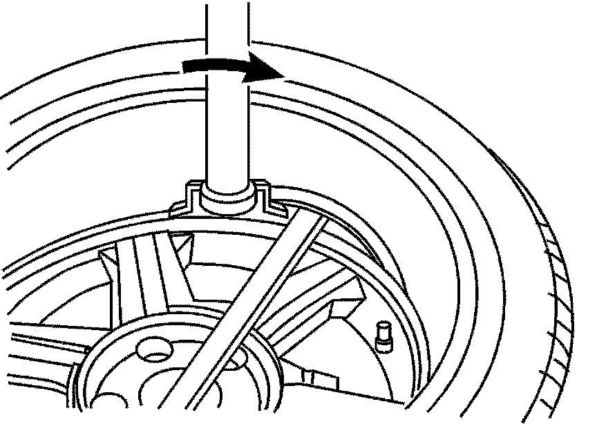
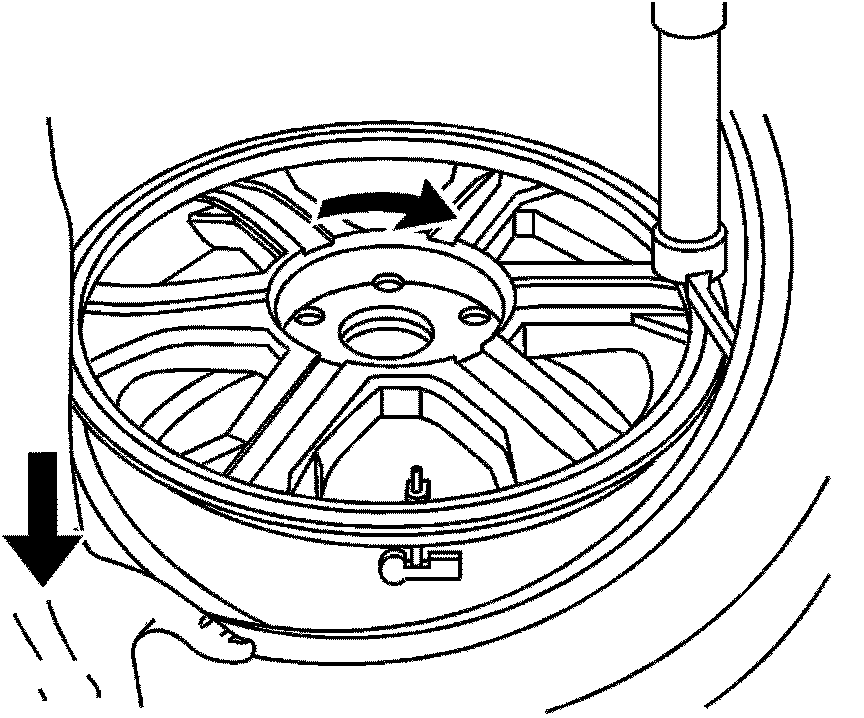
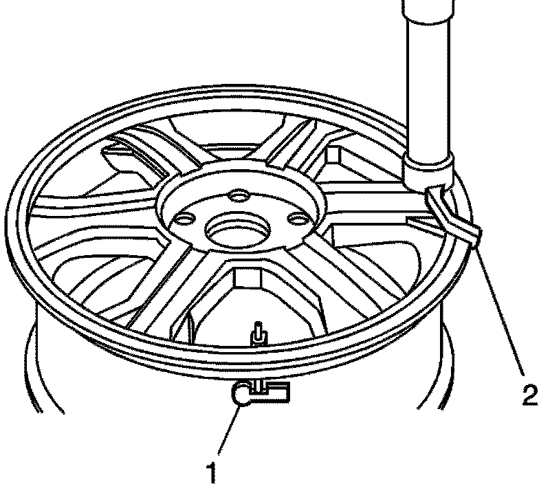
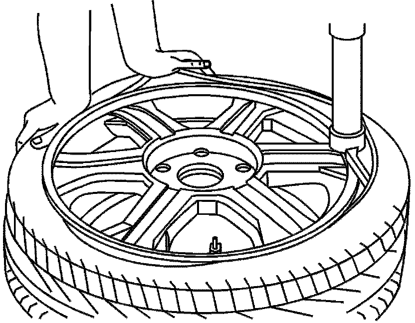

Tires - Minimizing Damage to TPM Sensors
INFORMATIONBulletin No.: 08-03-10-007
Date: May 16, 2008
Subject:
Minimizing Damage to Tire Pressure Monitor (TPM) Sensors During Tire Mounting/Dismounting
Models:
2009 and Prior GM Passenger Cars and Light Duty Trucks (including Saturn)
2009 and Prior HUMMER H2, H3
2009 and Prior Saab 9-7X
with Wheel Mounted Tire Pressure Sensors
Minimizing Damage To TPM Sensors
All GM vehicles now in production and sold in the U.S., as well as many vehicles sold in Canada, feature Tire Pressure Monitoring Systems that have valve stem mounted Tire Pressure Sensors. When dismounting and mounting tires, care must be taken when breaking the bead loose from the wheel. If the tire machines bead breaking fixture is positioned too close to the tire pressure sensor, as the tire bead breaks away from the wheel it may be forced into, or catch on the edge of the tire pressure sensor. This can damage the sensor and require the sensor to be replaced.
Care must also be taken when transferring the tire bead to the other side of the wheel rim. As the tire machine rotates and the tire bead is stretched around the wheel rim, the bead can come in contact with the sensor if it is not correctly positioned in relation to the mounting/dismounting head prior to tire mounting/dismounting. This can also cause sensor damage requiring replacement.
Procedure
Notice:
Use a tire changing machine in order to dismount tires. Do not use hand tools or tire irons alone in order to remove the tire from the wheel. Damage to the tire beads or the wheel rim could result.
Notice:
Do not scratch or damage the clear coating on aluminum wheels with the tire changing equipment. Scratching the clear coating could cause the aluminum wheel to corrode and the clear coating to peel from the wheel.
1. Remove the valve core from the valve stem.
2. Deflate the tire completely.
Important:
Rim-clamp European-type tire changers are recommended.
3. Use the tire changer in order to remove the tire from the wheel. Follow steps 4-7 to remove the tire from the wheel.

4. When separating the tire bead from the wheel position the bead breaking fixture 90, 180 and 270 degrees from the valve stem.

5. Position the wheel and tire so the valve stem is situated at the 2 o'clock position relative to the head. The tire iron or pry bar can be inserted when prying the outer tire bead up and over the mounting/dismounting head.

6. Position the wheel and tire so that the valve stem is situated again at the 2 o'clock position relative to the head. The tire iron or pry bar can be inserted when prying the inner tire bead up and over the mounting/dismounting head.
7. Remove all residual liquid sealant from the inside of the tire and wheel surfaces. If any tire sealant is noted upon tire dismounting on vehicles equipped with TPM replace the tire pressure sensor.
8. Use a wire brush or coarse steel wool in order to remove any rubber, light rust or corrosion from the wheel bead seats.
Important:
If bead seat corrosion has been identified as an air loss concern on the wheel being worked on, refer to GM Service Bulletin # 08-03-10-006 for additional information on correcting the leak.
9. Apply GM P/N 12345884 (in Canada, P/N 5728223) or equivalent to the tire bead and the wheel rim.

10. Using the tire machine, rotate the tire/wheel assembly clockwise when transferring the tire bead to the inside of the wheel rim.

11. Position the rim so that the valve stem (1) is situated at the 3 o'clock position relative to the head (2). This will protect the sensor when the bottom bead seats.

12. After the bottom bead is on the wheel, reposition the wheel and tire so that the valve stem is situated at the 9 o'clock position relative to the head. This will protect the sensor while mounting the tire bead to the outside of the wheel.

13. Use the tire changer in order to install the tire to the wheel.
Caution:
To avoid serious personal injury, do not stand over tire when inflating. The bead may break when the bead snaps over the safety hump. Do not exceed 275 kPa (40 psi) pressure when inflating any tire if beads are not seated. If 275 kPa (40 psi) pressure will not seat the beads, deflate, lubricate the beads and reinflate. Overinflating may cause the bead to break and cause serious personal injury.
Important:
Allowable bead seating pressure is 345 kPa (50 psi) on Extended Mobility Tires.
14. Inflate the tire until it passes the bead humps. Be sure that the valve core is not installed at this time.
15. Install the valve core to the valve core stem.
16. Inflate the tire to the proper air pressure.
17. Ensure that the locating rings are visible on both sides of the tire in order to verify that the tire bead is fully seated on the wheel.
Parts Information
The product shown above is available from GM SPO.

Disclaimer